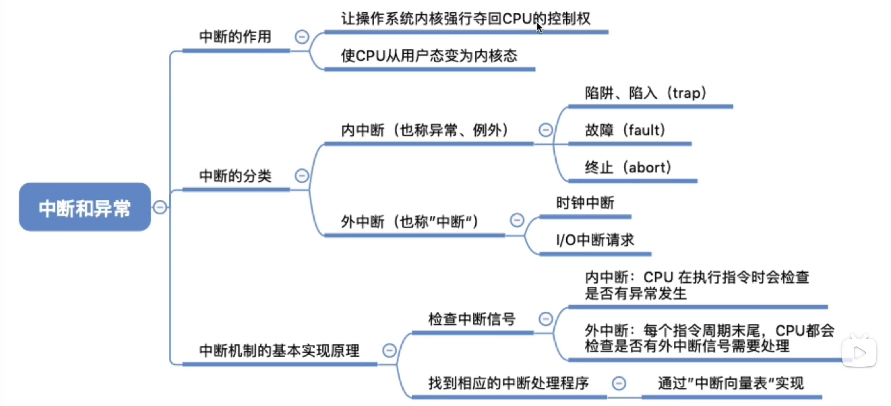

重点内容
- 操作系统的基本概念
- 操作系统的发展历程
- 程序运行环境
- CPU运行模式：内核模式与用户模式
- 中断和异常的处理；系统调用
- 程序的链接与装入；程序运行时内存映像与地址空间
- 操作系统结构
- 分层、模块化、宏内核、微内核、外核
- 操作系统引导
- 虚拟机
操作系统的基本概念
操作系统的特征
- 理解并发与并行的区别
- 并发与共享互为存在条件
- 没有并发和共享，就谈不上虚拟和异步，因此并发和共享式操作系统的两个最基本的特征
操作系统发展历程
操作系统的运行环境
处理器运行模式
中断的分类

**需要注意的是**：
将CPU模式改为内核态是硬件自动完成的，通过修改PSW中的
CS:RFLAGS:SS:RSP完成切换而中断向量表是通过数组实现的。时间上可以实现O(1)。
系统调用
操作系统结构
操作系统引导
计算机的启动顺序：
CPU加电，CS:IP 指向 FFFF0H
计算机加电后，CPU 需要从一个固定的地址开始执行指令。这是因为计算机刚启动时，内存是空的，必须依靠固化在主板上的 BIOS（基本输入输出系统） 来完成最初的初始化操作。
为什么是 FFFF0H？ 这个地址位于 CPU 地址空间的最顶端（1MB 内存的倒数 16 字节处），这个区域的 ROM 固定存储着 BIOS 的启动代码。这样，无论计算机如何启动，CPU 总是能找到 BIOS 代码并执行。
执行 JMP 指令跳转到 BIOS
FFFF0H是跳转指令，会让CPU跳转到BIOS的起始地址，让 BIOS 开始执行。
登记 BIOS 中断程序入口地址
BIOS 负责提供基本的输入输出功能，比如键盘、屏幕、硬盘等设备的访问。在计算机启动过程中，BIOS 会在内存中 设置中断向量表，登记这些设备的 中断处理程序（Interrupt Service Routine, ISR），让后续的软件可以通过 中断调用（INT 指令）访问这些硬件。
硬件自检
计算机刚开机时，可能有硬件损坏或未正确连接。BIOS 会运行 POST（加电自检） 代码，检查硬件是否正常
进行操作系统引导
BIOS 会从 引导设备（通常是硬盘、U 盘、光盘）读取 引导扇区（Boot Sector），然后 跳转到引导程序（如 Windows Boot Manager 或 Linux GRUB），由引导程序加载完整的操作系统。
那么为什么要这么早的登记中断向量表呢？如果在硬件自检完成后不可以吗？当时我一直有这样一个疑问
这是ChatGPT给出的回答
事实上，BIOS 在整个启动过程中会多次修改和更新中断向量表，但它确实会在 硬件自检（POST）之前 初始化基本的中断向量表，主要有以下几个原因：
1. CPU 可能需要处理异常
• 在计算机启动时，CPU 可能会遇到异常（例如除零错误、非法指令等）。如果 中断向量表未初始化，CPU 碰到异常时就 无法找到正确的处理程序，可能导致系统崩溃或未定义行为。
• 通过 预先登记基础的中断处理程序（比如 BIOS 提供的默认异常处理），可以确保 CPU 在任何情况下都能有一个合理的响应，而不会直接死机。
2. 确保基本 I/O 功能可用（如屏幕输出、蜂鸣器报警）
• POST 过程中，BIOS 可能需要 在屏幕上显示信息（如 “Memory Test Passed”）或者 蜂鸣器报警（如 RAM 或显卡错误）。
• 这些功能通常依赖 BIOS 提供的中断服务（如 INT 10H 处理显示输出、INT 16H 处理键盘输入等）。
• 如果等 自检后 才登记这些中断向量，BIOS 在自检过程中就无法打印信息或报警，用户就无法知道硬件是否正常工作。
3. 让 BIOS 自己能调用中断
• BIOS 本身 也可能在 POST 期间调用某些中断（如 INT 13H 访问存储设备、INT 19H 引导系统）。
• 这些中断程序必须 先登记好，否则 BIOS 运行时自己调用它们就会出错。
4. 硬件自检可能依赖某些 BIOS 中断
• 某些硬件检测过程 可能需要调用 BIOS 中断，比如：
• 访问 CMOS 读取系统时间（INT 1AH）。
• 检测硬盘是否存在（INT 13H）。
• 显示显卡信息（INT 10H）。
• 如果等到 POST 完成后才登记这些中断，BIOS 在自检过程中就无法使用它们，影响自检结果。
5. 之后仍会更新和修正中断向量表
• 早期登记的中断向量 只是 BIOS 的 初始版本，通常只是占位或提供基本功能。
• POST 结束后，如果有更好的中断服务（比如 扩展 BIOS、驱动程序、操作系统引导程序），它们 可以覆盖或修改 这些中断向量。例如：
• 显卡 BIOS 可能会提供更高级的 INT 10H（视频功能）。
• 磁盘驱动程序 可能会提供更高效的 INT 13H（磁盘访问）。
• 操作系统 会接管 INT 21H（DOS 系统调用）等。
总结
在硬件自检（POST）之前登记 BIOS 中断表，主要是为了让 CPU、BIOS 和基本硬件在整个启动过程中能正确工作。
如果不提前登记，BIOS 在自检过程中就无法使用中断，可能导致无法显示信息、无法检测硬件、甚至无法处理 CPU 异常，从而让计算机启动失败。
虚拟机
值得注意的是，支持虚拟化的CPU通常分更多指令等级。这样就不至于任何特权指令都要经过虚拟机处理，导致性能下降严重了